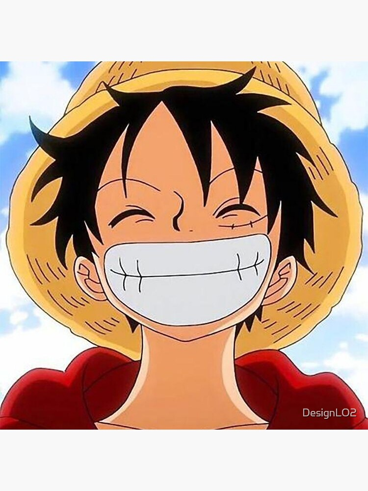

Monkey D. Luffy

Summary
Aspiring Pirate King
Education
- Bachelor of Arts, International Transportation & Trade - University of Foosha (1997-2001)
Work Experience
-
Emperor of the Sea - Yonko Inc.
August 2018 - Present
- Manage several pirate crews
- Responsible for financial investments in ships, crewmembers and villages
-
Pirate Captain - The Thousand Sunny Corp.
June 2001 - August 2018
- Manage pirate crew
- Save villages from corrupt naval officers and evil pirate crews
- Navigate efficiently through the east blue, grand line, and new world
Skills
- Capoeira: ⭐️
- Gum Gum fruit: ⭐️
- Organizational Skills: ⭐️⏰
Awards and Certifications
- 3,000,000,000 Bounty - The Marines. (August 2022)
Other